Evenpage, a five-year journal for iPhone: 102 themes.
iCloud backup.
A five-year journal for iPhone. Every date is one page that holds five years, in the look you choose, with a backup in your own iCloud Drive.
- 102 themesPainted art, colors, pastels, neons and day-glo, for the whole journal, a month or a single day.
- iCloud backupTurn it on once, and your entries and photos are saved to your own iCloud Drive about once a day.
- 48 fonts
- Face ID lock
- 10 languages
- No account, no ads
Full Version: 16 themes come with the app. A one-time $3.99 in-app purchase unlocks all 102, plus day and month themes, PDF books and more. No subscription.
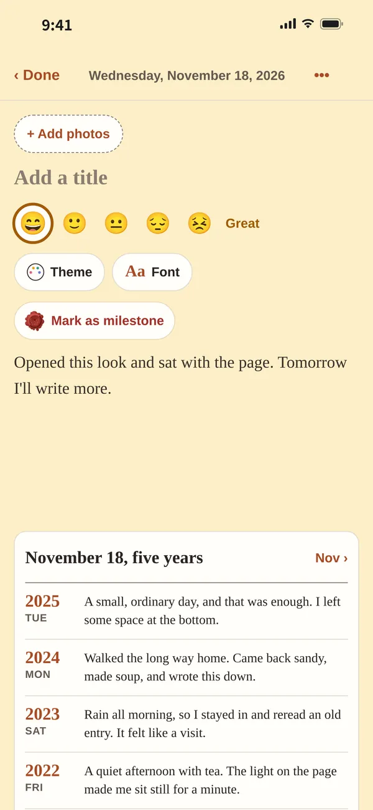
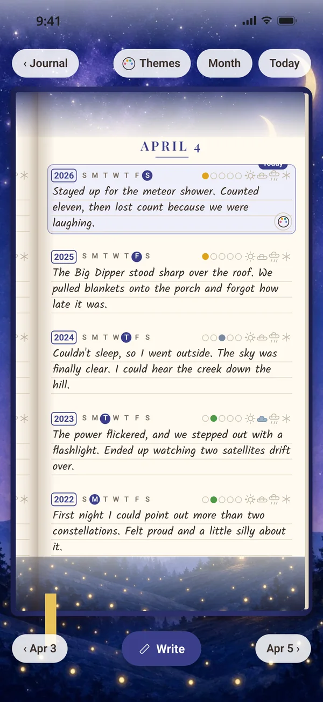
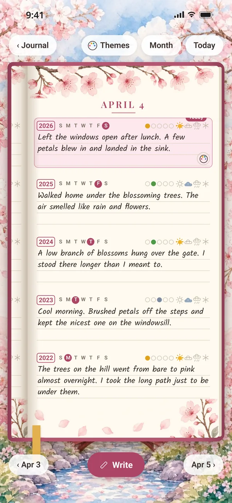
One date. Five years.
A journal that gets better the longer you keep it.
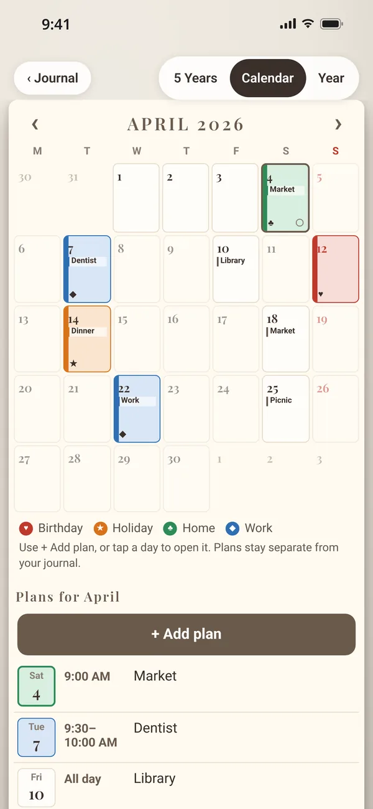
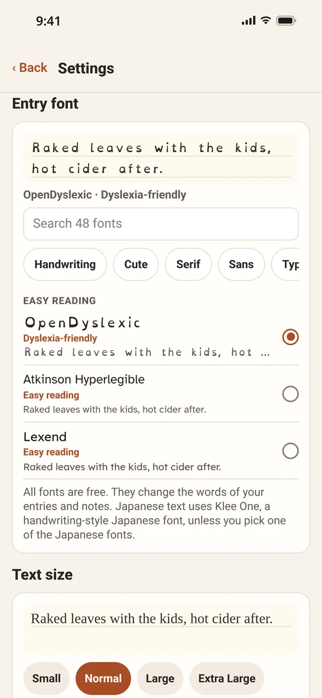
- 01 · The page
Every date is one page.
Open any date and see everything you wrote on it across five years, together on one page. Small moments add up to a record you can look back on.
- 02 · Themes
102 themes. Make it yours.
Painted art, colors, pastels, neons and day-glo. Give the whole journal one look, a month another, and a single day its own. Dark mode is there for late nights.
- 03 · Writing
Write as much as you like.
There is no limit on how much you write. Add a photo, mark the mood, or speak instead of typing with dictation.
- 04 · Planning
Plan ahead. Write ahead.
Add plans to the month calendar, and write entries for days that have not happened yet. A reminder at the time you pick helps you keep the habit.
- 05 · Fonts
Find your font.
Choose from 48 fonts, from handwriting to typewriter, including dyslexia-friendly OpenDyslexic, Atkinson Hyperlegible and Lexend. Text scales up to 200 percent.
Small app. Nothing missing.
Everything below is in the app on the App Store today.
102 themes
Painted art, solid colors, gradients, pastels, neons and day-glo. Set one theme for the whole journal, another for a month, and another for a single day, so a birthday can look different from the rest of its month.
Automatic iCloud backup
Turn it on once, and Evenpage saves your entries and photos to your own iCloud Drive about once a day. Restore from Settings whenever you need it, or make a backup file yourself with Back up now. The backup is never sent to us.
48 fonts, including OpenDyslexic
Choose the font your journal is written in, including OpenDyslexic, a typeface made for readers with dyslexia.
Built for accessibility
Evenpage works with the accessibility tools on your iPhone.
- VoiceOver
- Dynamic Type
- High contrast
- Reduce motion
- Dictation
- Read aloud
Five years on one page
Every date holds five years of entries, so you see this day across the years at a glance.
Unlimited writing
No word limit. Write one line or a whole page.
Face ID lock
Lock your journal with Face ID or your passcode.
Mood and weather
Mark the mood and the weather for each year of the day.
Search
Find any entry by a word you remember.
Reminders
A reminder at the time you pick, so the habit sticks.
Calendar plans
Add plans to the month calendar and see them in each day.
Write ahead
Write entries for future dates, ready when the day comes.
Photos
Add photos to an entry.
Dark mode
Easy on the eyes when you write at night.
10 languages
English, Japanese, Chinese (Simplified and Traditional), Korean, French, German, Italian, Spanish and Portuguese.
No account. No ads.
Open it and start writing. There is nothing to sign up for, and there are no ads.
See it on iPhone.
Real screens from the app. Scroll sideways for more.
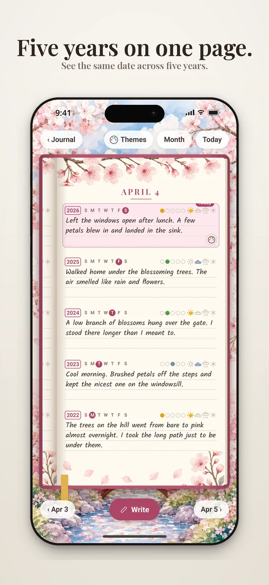
Five years on one page 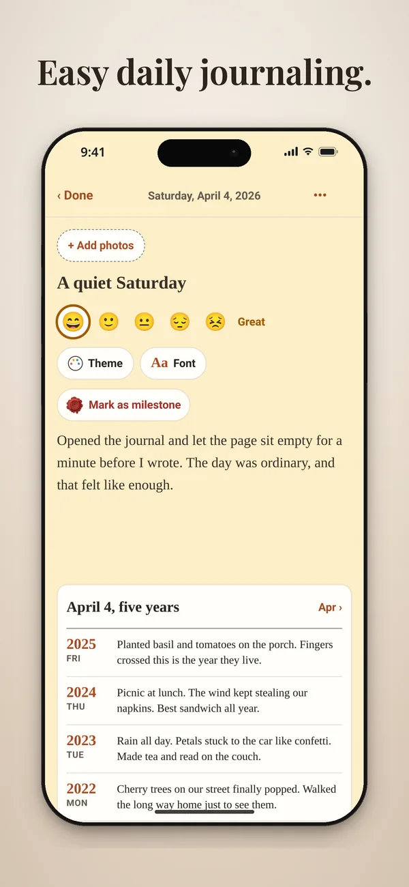
A minute is enough 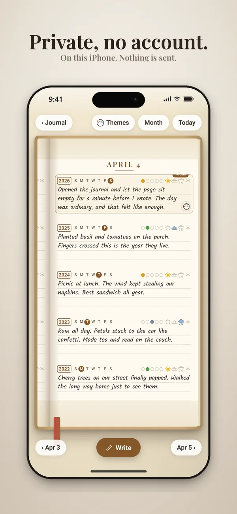
Yours alone 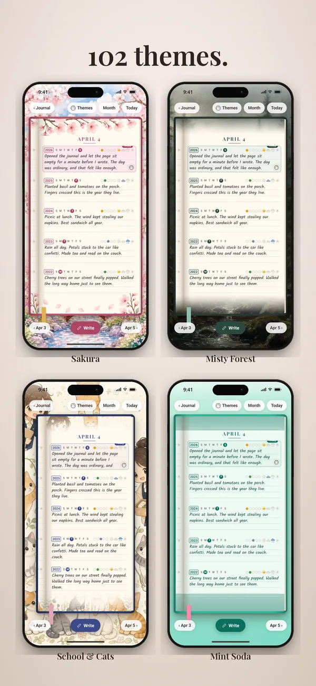
102 themes 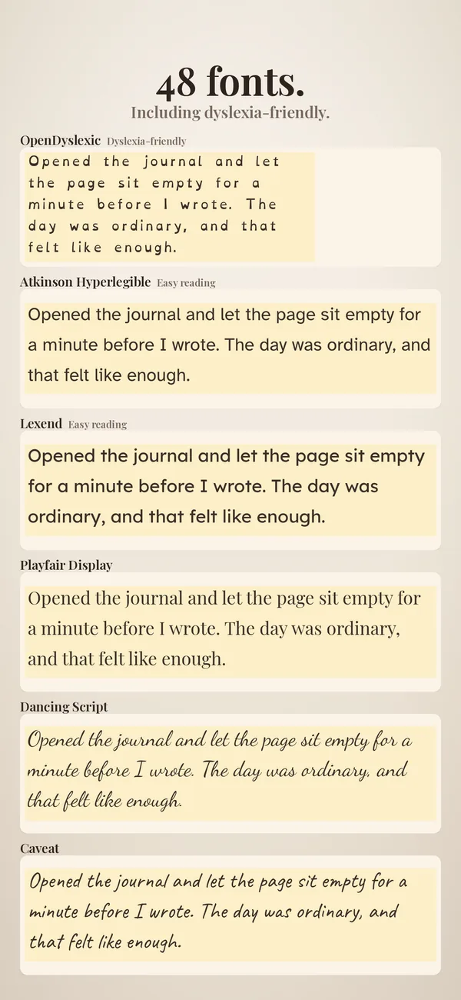
48 fonts 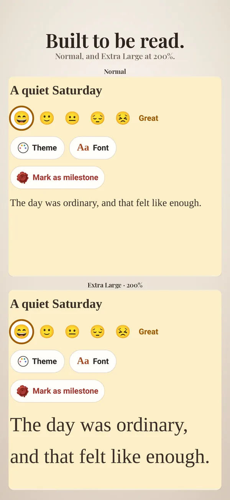
Big, beautiful text 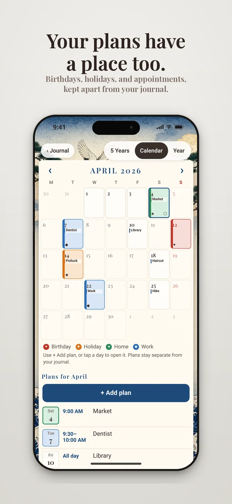
Plans on the calendar 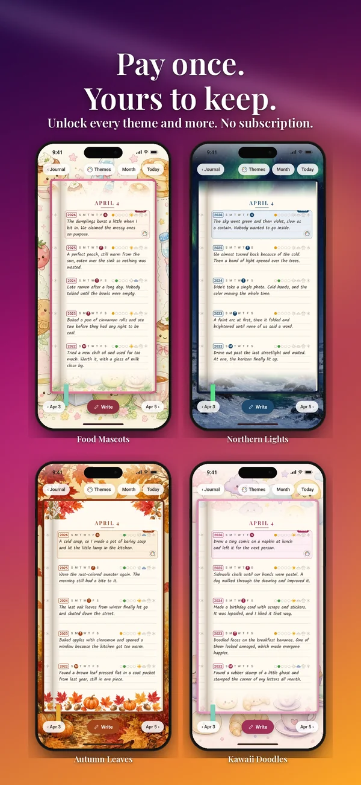
Pay once
One purchase. Every look.
- 102 themes
- Day and month themes
- Vertical Japanese writing
- Milestones
- PDF export
- And more
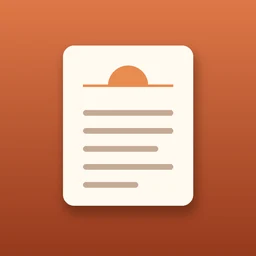
Start today's page.
Evenpage: Five Year Journal is on the App Store for iPhone.
Apple, the Apple logo, iPhone, Face ID and iCloud are trademarks of Apple Inc., registered in the U.S. and other countries. App Store is a service mark of Apple Inc.